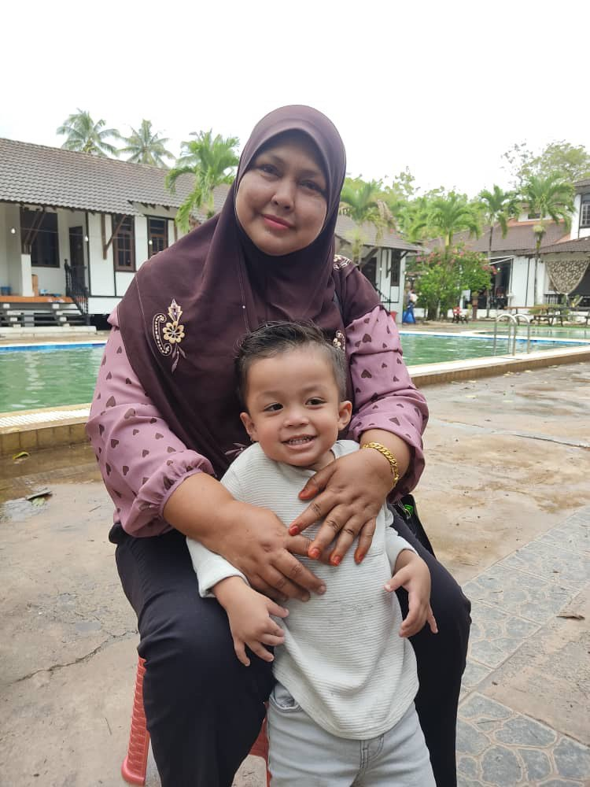
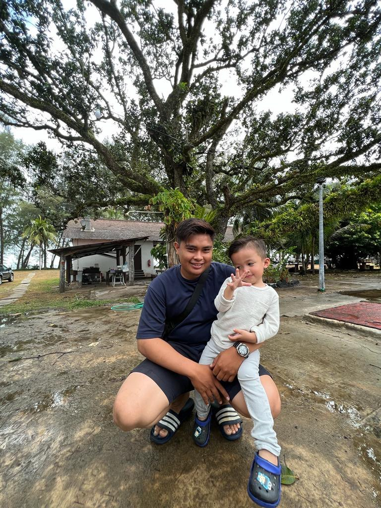
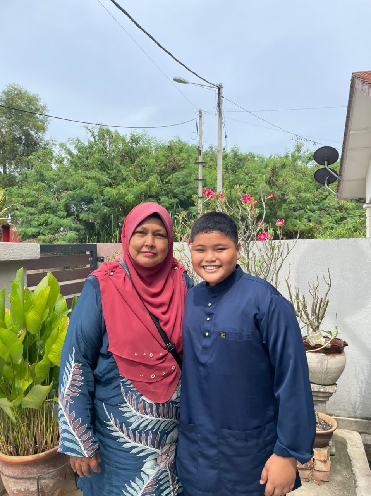

Father
SAIFUL BAHARI B. BUYONG
Say HI to myHero!! - He is 56 years old and was born at Kuantan,Pahang He work as lorry driver of Atlas Sdn Bhd Company. He love to make many friend easily because he talkative person He also very kind person until he is easily be lied with other person but he never pay back.

Mother
JARIAH BT HAIMIN
This is my beloved mother. - She is one year younger than my father and also born in Pahang, but she was born in Mentakab. She is a housewife,doctor,teacher and everthings to my family. She love to eat 'cekodok ikan bilis' very much. She can be a good friend but sometimes she also can be a discipline teacher. However, she will always have time to all of her family.
ALONG
MOHD HERMAN
Even he is the darker sibling in the family but he is my beloved brother. I will easily cry if anthing happen to him. This is because, he love his siblings more than anythings.He is 39 years old this years but he does not married yet. He work as lawnmover and always beside my parent to take care of them.


ANGAH
MOHD NORSHAM
This is my second older brother. He is a M & E Engineer of company EV Dynamic Sdn Bhd. He was marry with his wife and have 2 sons in 5 year old and 3 years old. He stay at Pontian, Johor. He is strict man but he also a spoiled man.
UDE
MOHD KHAIRUL NIZAM
And this my third brother. He is a ruthless by very compassionate man. He work as Senior Project Supervisor at Megatara Sdn Bhd. He also has married and have 2 child. His first child name Qaleesya Nafeesa and the second child Nadiff Adwa. He live at Sg Penchala, Damansara.

MEMEY
MUHAMMAD AL-FITRI
This is my younger brother. He is one year younger than me and he was born in 2 November 1998. He work as Grab rider in Kuala Lumpur. He is funny and loving person expecially with his younger sister and younger brother. And his is very sweet person to my mother.
IKA
NURUL AIN SYAFIKAH
This is my only younger sister, she is very spoiled girl. She was born 29 October 2003. She love food hunting and find matcha drink. All of the family love she because she is a talkative girl. So when she is not in mood, everyone will worried and try to make she in a mood back.

ALIF
MUHAMMAD ALIF DANIEL
Last member of my sibling is Alif. He is 13 years old and study at SMK Mentakab where near to the house. He reject to the study further because he cannot left my parent. He want to take care my mother and father by himself. He is very hardworking person where every he will help my mother to clean the house.